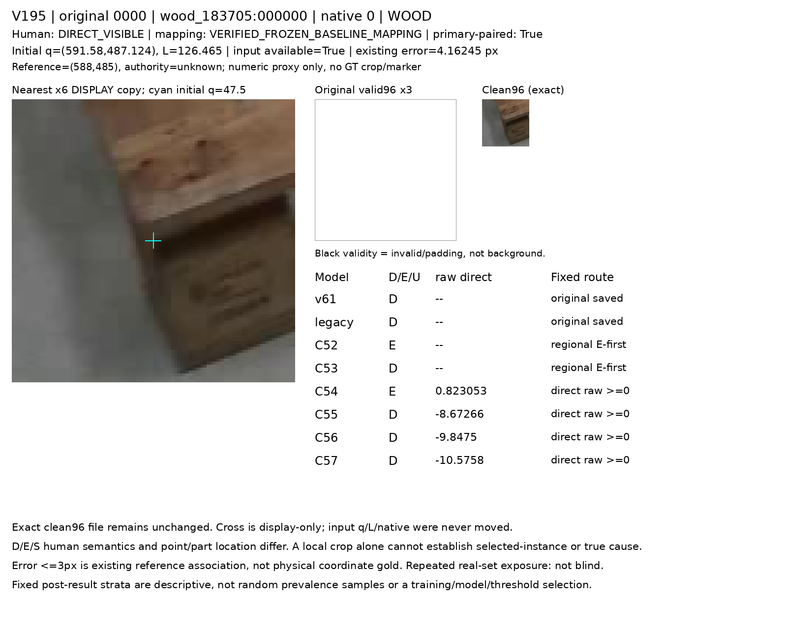
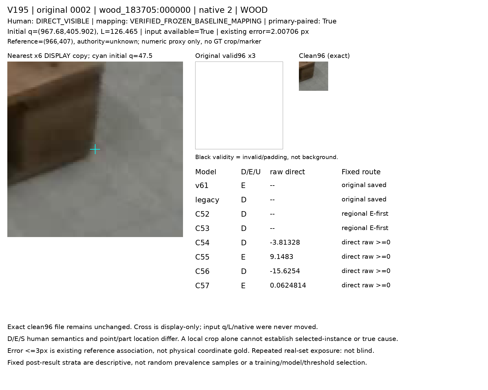
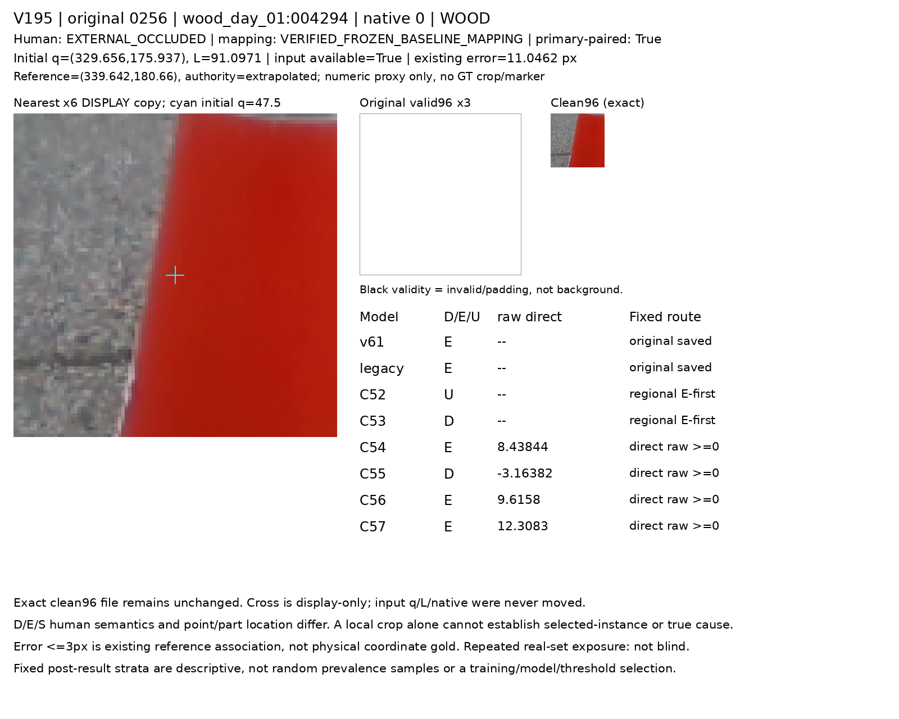
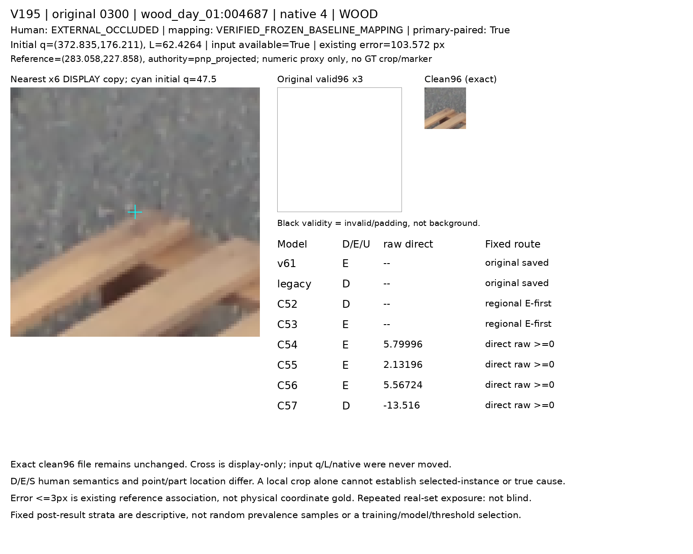
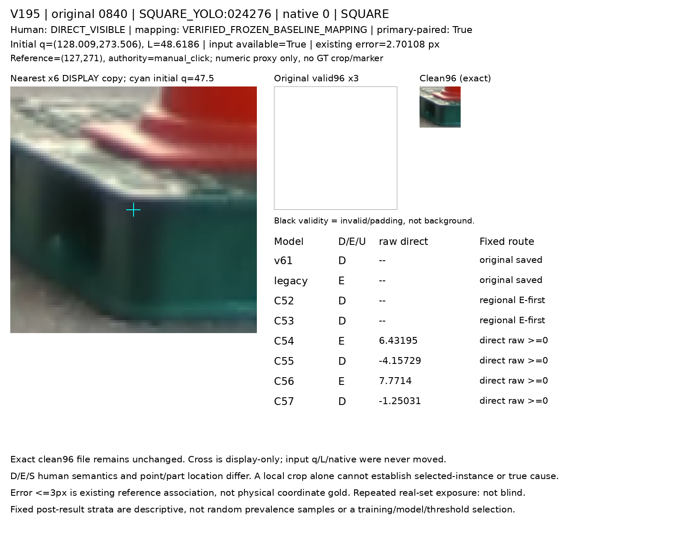
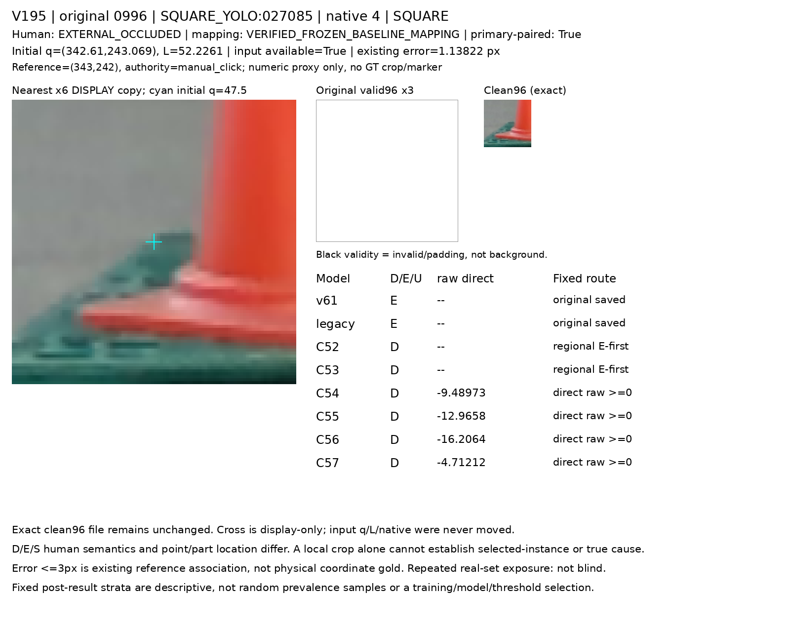

동일 primary1237(D1147/E90)에서 C56의 D/E 재현율은 62.0%/37.8%, C57은 63.6%/57.8%다. 아래에 U와 두 재질·기존6모델을 함께 보존했다. 어느 arm도 채택하거나 best로 고르지 않았으며 전체 목표는 미해결이다.
동일 primary1237 D1147/E90; 전체1784 inputU45는 다른 분모다. 새 두 모델을 best로 고르지 않았고 과거6모델 저장 경로는 그대로다.
| 모델 | N | D행 [D,E,U] | E행 [D,E,U] | D 정밀도 | D 재현율 | E 정밀도 | E 재현율 | U | U율 |
|---|---|---|---|---|---|---|---|---|---|
| v61 | 1237 | [260, 887, 0] | [2, 88, 0] | 99.2% | 22.7% | 9.0% | 97.8% | 0 | 0.0% |
| legacy | 1237 | [655, 319, 173] | [3, 83, 4] | 99.5% | 57.1% | 20.6% | 92.2% | 177 | 14.3% |
| C52 | 1237 | [821, 302, 24] | [52, 33, 5] | 94.0% | 71.6% | 9.9% | 36.7% | 29 | 2.3% |
| C53 | 1237 | [868, 273, 6] | [70, 20, 0] | 92.5% | 75.7% | 6.8% | 22.2% | 6 | 0.5% |
| C54 | 1237 | [698, 449, 0] | [55, 35, 0] | 92.7% | 60.9% | 7.2% | 38.9% | 0 | 0.0% |
| C55 | 1237 | [831, 316, 0] | [53, 37, 0] | 94.0% | 72.4% | 10.5% | 41.1% | 0 | 0.0% |
| C56 | 1237 | [711, 436, 0] | [56, 34, 0] | 92.7% | 62.0% | 7.2% | 37.8% | 0 | 0.0% |
| C57 | 1237 | [729, 418, 0] | [38, 52, 0] | 95.0% | 63.6% | 11.1% | 57.8% | 0 | 0.0% |
| 모델 | 재질 | N | D행 [D,E,U] | E행 [D,E,U] | D 정밀도 | D 재현율 | E 정밀도 | E 재현율 | U | U율 |
|---|---|---|---|---|---|---|---|---|---|---|
| C56 | WOOD | 645 | [395, 221, 0] | [15, 14, 0] | 96.3% | 64.1% | 6.0% | 48.3% | 0 | 0.0% |
| C57 | WOOD | 645 | [401, 215, 0] | [16, 13, 0] | 96.2% | 65.1% | 5.7% | 44.8% | 0 | 0.0% |
| C56 | SQUARE | 592 | [316, 215, 0] | [41, 20, 0] | 88.5% | 59.5% | 8.5% | 32.8% | 0 | 0.0% |
| C57 | SQUARE | 592 | [328, 203, 0] | [22, 39, 0] | 93.7% | 61.8% | 16.1% | 63.9% | 0 | 0.0% |
| 모델 | 별도 human S N | D 응답 | binary hidden 응답 | 미결정 |
|---|---|---|---|---|
| v61 | 21 | 9 | 12 | 0 |
| legacy | 21 | 13 | 3 | 5 |
| C52 | 21 | 18 | 2 | 1 |
| C53 | 21 | 15 | 6 | 0 |
| C54 | 21 | 19 | 2 | 0 |
| C55 | 21 | 16 | 5 | 0 |
| C56 | 21 | 16 | 5 | 0 |
| C57 | 21 | 13 | 8 | 0 |
| 모델 | 별도 human S N | D 응답 | binary hidden 응답 | 미결정 |
|---|---|---|---|---|
| v61 | 136 | 115 | 21 | 0 |
| legacy | 136 | 13 | 118 | 5 |
| C52 | 136 | 95 | 38 | 3 |
| C53 | 136 | 106 | 27 | 3 |
| C54 | 136 | 98 | 38 | 0 |
| C55 | 136 | 103 | 33 | 0 |
| C56 | 136 | 85 | 51 | 0 |
| C57 | 136 | 101 | 35 | 0 |
| 모델 | 기존reference≤3 humanD N | D | E | U |
|---|---|---|---|---|
| C56 | 461 | 290 | 171 | 0 |
| C57 | 461 | 291 | 170 | 0 |
| 모델 | T 정밀도 | T 재현율 | non-T 재현율 | ownerF 정밀도 | ownerF 재현율 |
|---|---|---|---|---|---|
| C52 | 39.5% | 70.8% | 85.6% | 82.1% | 24.0% |
| C53 | 53.3% | 66.7% | 92.2% | 75.4% | 47.9% |
| C54 | 30.6% | 79.2% | 76.1% | 77.4% | 25.0% |
| C55 | 46.5% | 83.3% | 87.2% | 77.8% | 51.0% |
| C56 | 33.9% | 83.3% | 78.3% | 74.3% | 27.1% |
| C57 | 35.6% | 66.7% | 83.9% | 75.0% | 43.8% |
| v61 | 30.4% | 29.2% | 91.1% | 미정 | 미정 |





